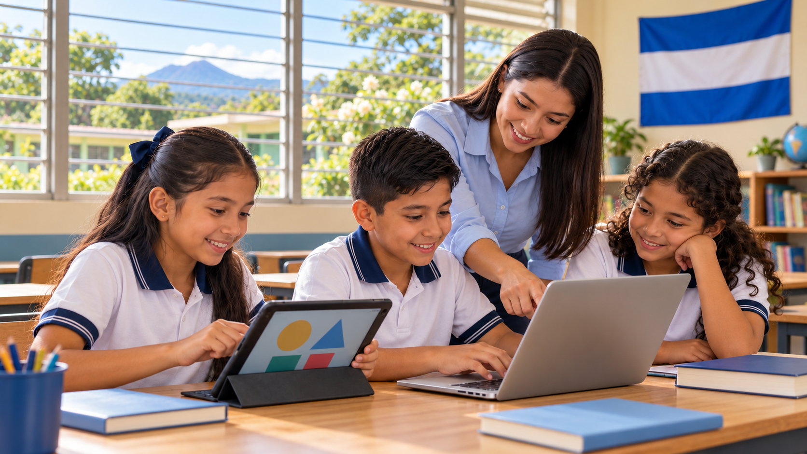
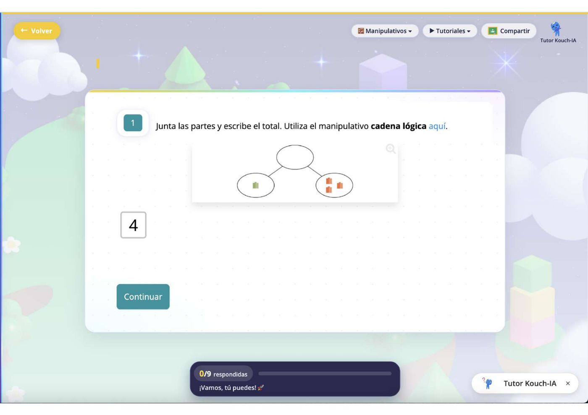

49.9%
Tercer grado en el nivel más bajo
En ERCE 2019, casi la mitad de los estudiantes salvadoreños de tercer grado se ubicó en el nivel más bajo de desempeño en matemáticas.
Fuente: ERCE 2019 · Matemática · 3.er gradoEDUCACIÓN E INNOVACIÓN
La tecnología abre nuevas oportunidades. El aprendizaje les da sentido.

01 · Transformación educativa
El Salvador avanza en su transformación educativa, incorporando tecnología, herramientas digitales e inteligencia artificial.
02 · Comprensión matemática
Aprender matemáticas es mucho más que resolver operaciones: es desarrollar la capacidad de razonar, interpretar y tomar decisiones.
En ERCE 2019, casi la mitad de los estudiantes salvadoreños de tercer grado se ubicó en el nivel más bajo de desempeño en matemáticas.
Fuente: ERCE 2019 · Matemática · 3.er gradoSolo 12% de los estudiantes salvadoreños de 15 años alcanzó al menos el nivel básico de competencia matemática.
Fuente: PISA 2025 · Competencia matemáticaEl Salvador pasó de 343 a 346 puntos y fue uno de los dos países latinoamericanos con aumento de puntaje entre ambas ediciones.
La variación de +3 puntos no fue estadísticamente significativa. La OCDE describe el desempeño en matemáticas como estable respecto de 2022. La comparación regional incluye los países participantes con datos comparables en ambas ediciones; Costa Rica también aumentó 3 puntos.
Consultar OCDE ↗Consultar comparación regional · página 6 ↗La oportunidad es fortalecer estas habilidades desde los primeros años, con experiencias que ayuden a comprender antes de operar.
03 · Descubrimiento
Kouchea convierte la práctica matemática en una experiencia visual, guiada e interactiva para niñas y niños de 6 a 12 años.
Explora cómo las matemáticas cobran vida en Kouchea. Las imágenes pueden ampliarse para observar detalles.

04 · Correspondencia
Una propuesta que complementa la tecnología, los contenidos y la formación integral que impulsa el país.
Selecciona una iniciativa para descubrir cómo se complementan ↗
Kouchea aporta actividades matemáticas interactivas que pueden aprovechar los dispositivos disponibles para fortalecer la práctica y la comprensión.
Entre los contenidos analizados de matemáticas de 1.º a 5.º de primaria.
El análisis identifica coincidencias en aritmética, geometría, medidas y estadística, además de puntos de encuentro en la resolución de problemas y el uso de representaciones visuales.
Kouchi-IA acompaña con preguntas, pistas y nuevas explicaciones para que niñas y niños construyan su propio camino hacia la solución.
Una aportación especializada a un entorno educativo que incorpora herramientas de inteligencia artificial.
La gamificación invita a niñas y niños a ahorrar, invertir o gastar monedas virtuales para acceder a experiencias y recompensas.
Decisiones con sentido lúdico que enriquecen la experiencia de aprendizaje.
05 · Evidencia
Se compararon enseñanza clásica, videos y Kouchea.
estudiantes
semanas
grupos
condiciones
El estudio reportó calificaciones superiores con Kouchea frente a la enseñanza clásica, sin diferencia estadísticamente significativa frente a videos.
Año del estudio: 2025.
Autor: Dr. Arturo González Isla.
Adscripción declarada: Departamento de Biociencias, Escuela de Medicina y Ciencias de la Salud, Tecnológico de Monterrey.
152 estudiantes de primero y segundo de primaria, organizados en cinco grupos. Durante 18 semanas, todos pasaron por las tres condiciones en diferente orden: cinco semanas de intervención y una evaluación por periodo.
52 participantes en las encuestas: 32 estudiantes, 7 docentes y 13 madres, padres y cuidadores. Las percepciones se centraron en utilidad, experiencia de uso y aprendizaje.
quiso continuar usando Kouchea
percibió mejor comprensión de los temas
Docentes y familias también compartieron valoraciones favorables sobre la experiencia de aprendizaje.
06 · El siguiente paso
Kouchea viene a SUMAR. A sumar nuevas formas de comprender las matemáticas, experiencias que motivan a aprender y oportunidades para que más niños y niñas descubran lo que son capaces de lograr.
Junto a los docentes y las iniciativas educativas de El Salvador, queremos contribuir a una educación matemática que conecte conocimiento, razonamiento y futuro.
07 · Escenario educativo
Explora cómo cambia la inversión anual según el número de estudiantes contemplados.
Definir población, centros y metas educativas.
Complementar recursos digitales y trabajo docente.
Inducción, soporte y seguimiento de uso.
Revisar avances, uso y oportunidades de mejora.